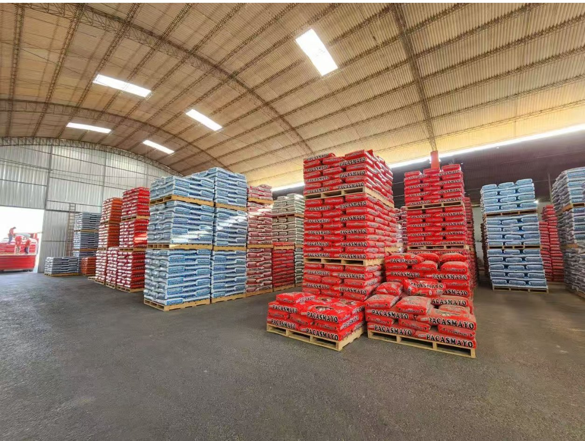
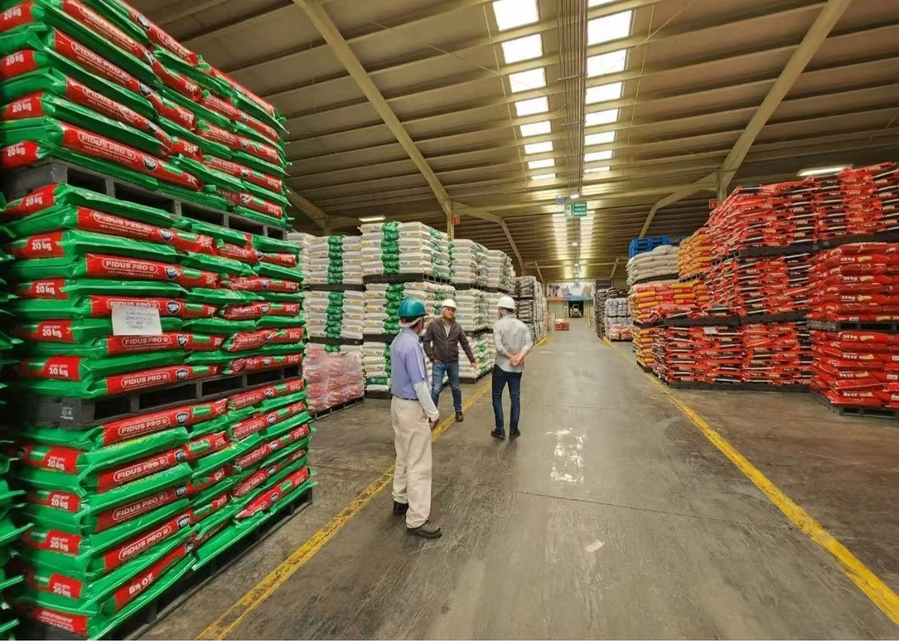
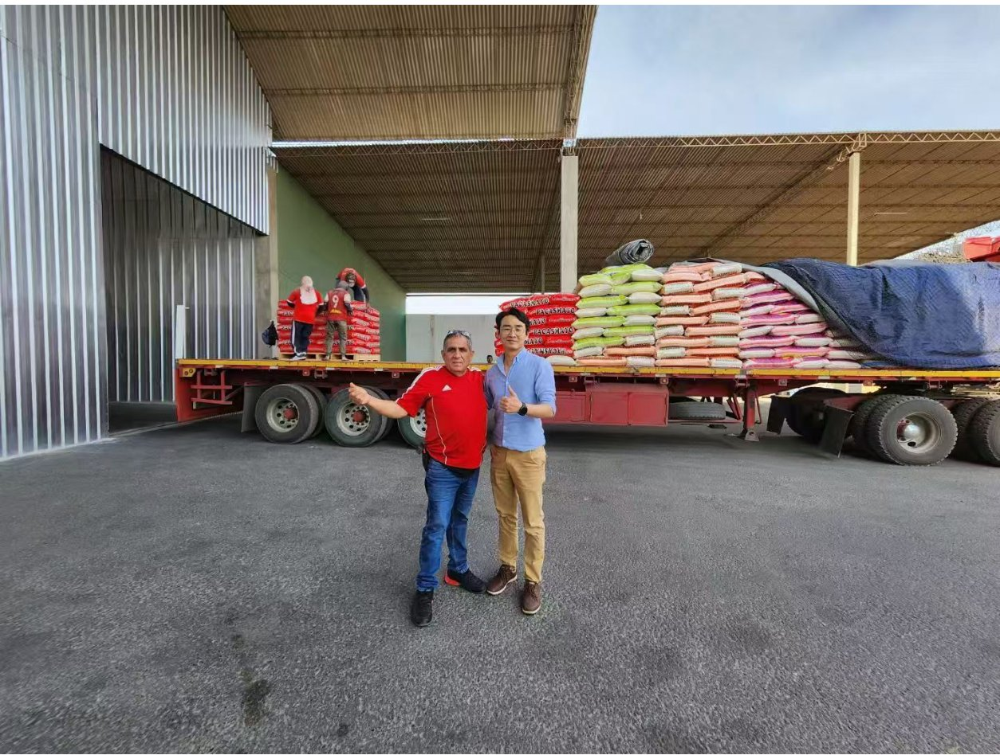

CHAMWIN (Chenzhou Chamwin Packaging Materials Co., Ltd.) manufactures premium PP woven bags for food, feed, and grain packaging. Backed by a 103-acre smart factory and a ¥206 million investment, we supply trusted names like Yihai Kerry, COFCO, and China Resources Wufeng.

From food-grade rice bags to heavy-duty feed sacks — all produced in-house with full quality traceability.
PP woven bags certified for direct food contact — ideal for rice, flour, sugar, and salt. Passed 2024 Hunan provincial food-contact quality inspection.
High-tensile woven sacks for animal feed and pet food, with moisture-resistant lamination options and tear-proof stitching for long logistics routes.
Breathable, UV-stabilized woven bags for rice, corn, wheat, and beans. Engineered for bulk storage, palletizing, and export container shipping.
CHAMWIN was founded by Dongguan Changying Plastic Woven Packaging Co., Ltd., bringing two decades of woven-bag craftsmanship to a brand-new 103-acre campus in Rucheng Economic Development Zone, Hunan.

Organized warehouses, standardized operations, and on-time container loading.

Send us your bag size, weight capacity, and artwork — we'll reply with a quotation within 24 hours.
Get Free Samples & Quote